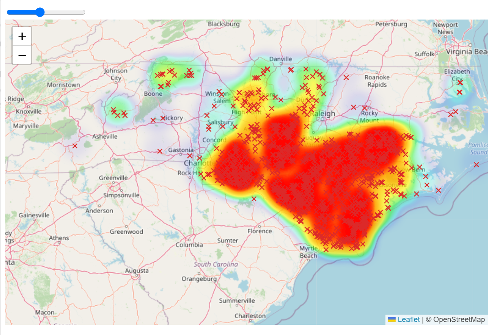
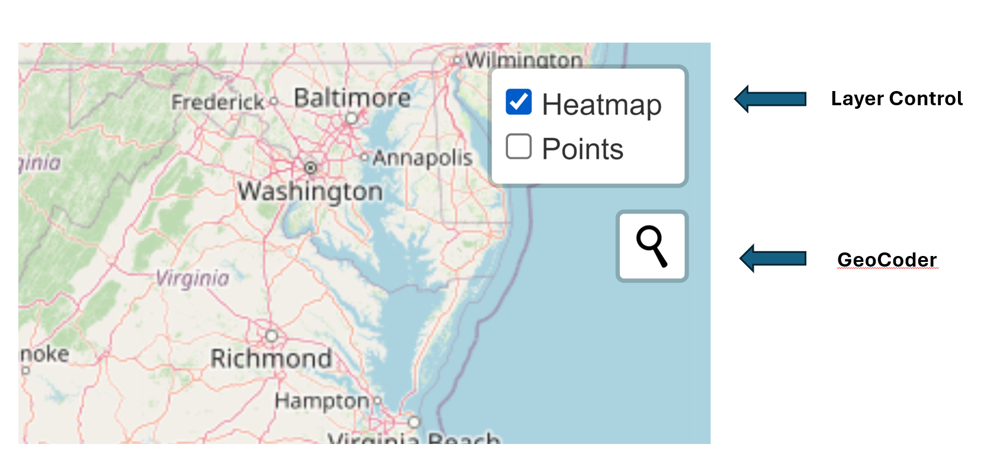

## format start and end into time
df$st <- as.POSIXct(df$start, format = "%Y-%m-%dT%H:%M:%SZ")
df$fn <- as.POSIXct(df$end, format = "%Y-%m-%dT%H:%M:%SZ")NC Road Closures Map Tutorial
Data Retrieval and Prep
The road closure data was retrieved from the North Carolina Department of Transportation Traveler Information System (TIMS). The dataset was filtered to include only road closure points that were recorded during the incident period of Hurricane Florence (September 12th - September 29th, 2018).
The dataset provided information on how long the road closure lasted. I formatted the start and end date for each road closure into an asPOSIXCT format that both R and Javascript could read and calculate as values.
I then saved this new dataset as a JSON.
# Convert data to JSON
json_data <- toJSON(df2)
# Write JSON to file with .json extension
write(json_data, "finalproj/data.json")Create a Leaflet Map
Next, in visual studio code, I created an html document and made a simple leaflet map centered on North Carolina. I first copied the CSS stylesheet and the source script, which allows you to use commands and styles specific to leaflet.
CSS Style Sheet
<link rel="stylesheet" href="https://unpkg.com/leaflet@1.8.0/dist/leaflet.css"
integrity="sha512-hoalWLoI8r4UszCkZ5kL8vayOGVae1oxXe/2A4AO6J9+580uKHDO3JdHb7NzwwzK5xr/Fs0W40kiNHxM9vyTtQ=="
crossorigin=""/>Source Script
<script src="https://unpkg.com/leaflet@1.8.0/dist/leaflet.js"
integrity="sha512-BB3hKbKWOc9Ez/TAwyWxNXeoV9c1v6FIeYiBieIWkpLjauysF18NzgR1MBNBXf8/KABdlkX68nAhlwcDFLGPCQ=="
crossorigin=""></script>
<script src="closures.js"></script>Then I created a div (a container) for the map and gave it an id. The id allows me to then give the map dimensions in the CSS code using #map. To reference an object id in CSS, use a #.
<!-- Create Map Div and id -->
<div id="map"></div>/* map size */
#map { height: 500px; }Next, I created a leaflet map centered on North Carolina and added an OSM tile layer to the map.
//Create leaflet map centered on North Carolina
var map = L.map('map').setView([35, -80], 7);
//Add OSM tile layer
L.tileLayer('https://tile.openstreetmap.org/{z}/{x}/{y}.png', {
maxZoom: 19,
attribution: '© OpenStreetMap'
}).addTo(map);Next, I imported the JSON of road closures and created a javascript file from the json, naming the file closures.
I then added a script src line of code to connect the html to the JS file with the data.
<script src="closures.js"></script>My original dataset had longitude and latitude in two different columns, and they need to be in the same column as a vector to be read by javascript. The following lines of code create a new variable, geojsonData, which has all the data from my dataset, but one singular column for latitude and longitude as a vector.
//Create new geojson that turns lat and lon columns into a vector of geometry
var geojsonData = {
"type": "FeatureCollection",
"features": []
};
//loop iterating through the whole dataset for each data point
closures.forEach(function (dataPoint) {
var feature = {
"type": "Feature",
"properties": {
"IncidentID": dataPoint.IncidentID,
"start": dataPoint.start,
"end": dataPoint.end,
"RoadName": dataPoint.RoadName,
"CommonName": dataPoint.CommonName,
"Direction": dataPoint.Direction,
"ConditionName": dataPoint.ConditionName,
"IncidentType": dataPoint.IncidentType,
"Event": dataPoint.Event,
"EventName": dataPoint.EventName,
"Reason": dataPoint.Reason,
"DOTNotes": dataPoint.DOTNotes,
"day": dataPoint.day,
"flood": dataPoint.flood,
"wind": dataPoint.wind,
"winter": dataPoint.winter,
"fog": dataPoint.fog,
"rainevent": dataPoint.rainevent,
"winterevent": dataPoint.winterevent,
"cycloneevent": dataPoint.cycloneevent,
"dur": dataPoint.dur,
"noweather": dataPoint.noweather,
"st": dataPoint.st,
"fn": dataPoint.fn,
"t": dataPoint.t,
"te": dataPoint.te
},
"geometry": { //here is where the new lat/lon vector is located
"type": "Point",
"coordinates": [dataPoint.Longitude, dataPoint.Latitude]
}
};
geojsonData.features.push(feature); //adds entire feature to the geojsonData object
});I then created a custom icon for the road closures. To change the points to an “x” to symbolize a road closure, I made an “x” icon using unicode characters, a built-in library of common symbols. Each symbol has a code. (Note: Some unicode symbols only work with particular fonts, otherwise they will just show up as squares.) I use L.divIcon instead of the default L.Icon because a div icon makes a lightweight icon for markers that uses a simple div element instead of an image, which can take longer to load. I have a lot of points, so this method is better for me than a png.
//Create unique icon (x for road closures)
var customIcon = L.divIcon({
className: 'material-symbols-outlined', //give class for CSS purposes
iconAnchor: [5, 5], //determines size of icon
html: '✖' //code for "x" icon
});I added these CSS elements for the icon
/* icon styles */
.material-symbols-outlined {
font-variation-settings: 'FILL' 0, 'wght' 400, 'GRAD' 0, 'opsz' 24;
display: inline-block;
color: rgb(220, 41, 41);
font-family: 'Material Icons';
font-size: 12px;
}Then I created a geojson layer, using the point to layer leaflet plugin to place the points on the map. I also created a popup that provided content on each particular closure when the point was clicked.
// Create geojson layer from closure data
var geojsonLayer = L.geoJson(geojsonData, {
pointToLayer: function (feature, latlng) {
// Create marker with custom icon
var marker = L.marker(latlng, { icon: customIcon });
// Bind a popup to the marker
marker.bindPopup("<b>Road Name:</b> " + feature.properties.RoadName + "<br>" +
"<b>Direction:</b> " + feature.properties.Direction + "<br>" +
"<b>Start Time:</b> " + new Date(feature.properties.st).toDateString() + "<br>" +
"<b>End Time:</b> " + new Date(feature.properties.fn).toDateString() + "<br>" +
"<b>Reason:</b> " + feature.properties.Reason);
return marker;
}
}).addTo(map);Here is what the first iteration of my map looked like with each road closure point appearing as an “x” on the map. Zoom in and click to get information about a road closure!
First Iteration
Create Slider
Next, I added the time component. I created a slider, gave it an id for CSS (style) purposes. The min and max reflected the range of days I wanted to capture (September 12th - September 29th, 2018, 17 days).
<input id="dateSlider" type="range" value="0" name="Day" min="0" max="17" oninput="moveSlider(this.value)">I then created the function, moveSlider to reflect the number of road closures over time. Each road closure point had a start time and end time. I designed the function so that the point appears on the day it starts and disappears on the day it ends.
First I make the dates compatible with the slider range (0 to 17). I define variables for the start and end date of my date range so I can manipulate them more easily. I need to make September 12th = 0 and September 29th = 17. getTime() is a JavaScript command that works with Date objects and returns the numeric value corresponding to the specified time. I calculate each date as a proportion of 17 in the variable selectedTime so it corresponds to the value of the slider.
// Create slider function
function moveSlider(value) {
// Define start and end dates
var startDate = new Date("2018-09-12T00:00:00Z");
var endDate = new Date("2018-09-29T23:59:59Z");
// Calculate total duration in milliseconds
var totalDuration = endDate.getTime() - startDate.getTime();
// Calculate the selected time based on the slider value, make it a proportion of 17
var selectedTime = new Date(startDate.getTime() + (totalDuration * value / 17));The function then filters geojsonData to find features that fall within the selectedTime range and adds markers for these features to the geojsonLayer. If the selectedTime is greater than the startTime and less than the endTime, the point appears. If it falls outside that range, the point does not appear.
// Filter geojsonData based on selected time
var filteredData = geojsonData.features.filter(function (feature) {
var startTime = new Date(feature.properties.st).getTime();
var endTime = new Date(feature.properties.fn).getTime();
return selectedTime >= startTime && selectedTime <= endTime;
});Once my points are coded to appear and disappear when I want them to, I add a line of code that clears the markers on the map each time the slider is moved, so the points don’t populate on top of each other.
// Clear existing markers from geojsonLayer
geojsonLayer.clearLayers();After clearing the map, I add the markers to the map according the logic of filterdData. This is the end of my slider function, which iterates through the entire dataset.
// Add markers for filtered data to geojsonLayer
filteredData.forEach(function (feature) {
var marker = L.marker([feature.geometry.coordinates[1], feature.geometry.coordinates[0]], { icon: customIcon });
geojsonLayer.addLayer(marker);
});
}I then write code to make sure my slider starts at zero each time the page is refreshed.
//Start with empty map
moveSlider(0)Second Iteration
Create Heat Map
The point layer is nice, but very crowded. I want to find another way to convey the scale of road closures. I create another map layer that visualizes point density: a heatmap.
To create a heatmap, I used a leaflet heatmap plugin called Leaflet.heat. First, I add the style sheet and the source script to the html.
Style Sheet
<link rel="stylesheet" href="https://unpkg.com/leaflet.heat/dist/leaflet.heat.css" />Source Script
<script src="https://leaflet.github.io/Leaflet.heat/dist/leaflet-heat.js"></script>I created a second map layer for the heatmap. Because there are so many data points, this particular dataset makes the heatmap all one color. This can be adjusted by customizing the gradient, max and radius values. I edited the max and gradient values so that they reflected the full distribution of my data.
var heatLayer = L.heatLayer(geojsonData.features.map(function (feature) {
return [feature.geometry.coordinates[1], feature.geometry.coordinates[0]];
}), {
radius: 25,
blur: 15,
maxZoom: 10,
max: 1.8,
gradient: {
0.1: 'blue',
0.2: 'cyan',
0.4: 'lime',
0.6: 'yellow',
0.9: 'orange',
1.0: 'red'
}
}).addTo(map);Then, with the help of ChatGPT, I added these lines of code to the bottom of the moveSlider function to incorporate the heat map layer, so the heatmap layer would be synchronized with the point layer.
//Create variable to store filtered data points for heatlayer
var heatData = filteredData.map(function (feature) {
return [feature.geometry.coordinates[1], feature.geometry.coordinates[0]];
});
//direct heatlayer command to pull from heatData
heatLayer.setLatLngs(heatData);Here is a photo of what we’re working with.

Customization and Aesthetics
This is a functional map. But I want to add some customizable features for the user, and add some information to let the reader know what I’m visualizing. The heat layer and point layer on top of one another make the visualization muddled.
Next, I created added layer switching controls for both layers. I defined the two layers, added the baselayer control object to the map, and added both layers to the map. Now the user can decide to look at the point or heat layer.
//Add layer control to toggle back and forth between layers
var baseLayers = {
"Heatmap": heatLayer,
"Points": geojsonLayer
};
L.control.layers(null, baseLayers).addTo(map);
map.addLayer(heatLayer);
map.addLayer(geojsonLayer);For the search address feature, I used the geocoder plugin from leaflet called Leaflet Control Geocoder. You know the drill. Insert the plugin’s style sheet and source script.
Style Sheet
<link rel="stylesheet" href="https://unpkg.com/leaflet-control-geocoder/dist/Control.Geocoder.css">Source Script
<script src="https://unpkg.com/leaflet-control-geocoder/dist/Control.Geocoder.js"></script>I then customized the code to have a search icon and the words “Search Location” in the text box once the icon has been clicked.
//create search location icon
var geocoder = L.Control.geocoder({
geocoder: L.Control.Geocoder.nominatim(),
defaultMarkGeocode: false,
placeholder: "Search Location",
collapsed: true,
query: ""
}).on('markgeocode', function (e) {
var latlng = e.geocode.center;
map.setView(latlng, map.getZoom());
map.fitBounds(e.geocode.bbox);
}).addTo(map);Layer Control and Geocoder appear in the top right corner of the map.

I add a title and a date to the map. I use <span></span> for the date, because it will have dynamic content. I want to synchronize the date to the movement of the slider.
<h1>NC Road Closures During Hurricane Florence</h1>
<h2>Date: <span id="dateDisplay"></span></h2>Next, I create a function to update the date based on the slider value. I create a variable that connects the function to the h2 element above using the getElementById command. Then I change the date format so it returns to readable text.
function updateDateDisplay(date) {
//create var that updates date display element at top of page
var dateDisplay = document.getElementById('dateDisplay');
//Transform date into readable text
dateDisplay.textContent = date.toDateString();
}But how does the function know which date to choose? It relies on the slider value, which is also the earlier variable I created, selectedTime. Within the moveSlider function, I apply the updateDateDisplay function to the selectedTime. Now it will update each time the slider moves.
updateDateDisplay(selectedTime);Now I’ll add some more aesthetic features to the website itself. Using the w3school’s Round Slider CSS code, I customized my slider design.
#dateSlider {
-webkit-appearance: none;
width: 100%;
height: 15px;
border-radius: 5px;
background: #d3d3d3;
outline: none;
opacity: 0.7;
-webkit-transition: .2s;
transition: opacity .2s;
}
#dateSlider::-webkit-slider-thumb {
-webkit-appearance: none;
appearance: none;
width: 25px;
height: 25px;
border-radius: 50%;
background: #04AA6D;
cursor: pointer;
}
#dateSlider::-moz-range-thumb {
width: 25px;
height: 25px;
border-radius: 50%;
background: #04AA6D;
cursor: pointer;I want the map to take up most of the page, and I want the slider and text to move to the lefthand side of the page. I also want to leave room for some background text on Hurricane Florence. I do this by creating a div element called sidebar and placing my title, date, and slider with it.
<h1>NC Road Closures During Hurricane Florence</h1>
<h2>Date: <span id="dateDisplay"></span></h2>
<!-- Create slider -->
<input id="dateSlider" type="range" value="0" name="Day" min="0" max="17" oninput="moveSlider(this.value)">
</div>Then I create another div that will encompass both the sidebar and the map called map container.
<div id="map-container"></div>
<div id="sidebar">
<h1>NC Road Closures During Hurricane Florence</h1>
<h2>Date: <span id="dateDisplay"></span></h2>
<!-- Create slider -->
<input id="dateSlider" type="range" value="0" name="Day" min="0" max="17" oninput="moveSlider(this.value)">
</div>
<!-- Create Map Div and id -->
<div id="map"></div>
</div>I add this css code. I set the sidebar and map to have positions relative to each other. Using 100vw and 100vh, I direct the map and sidebar to take up the entire screen (100% of viewport height and width). The display code places the sidebar on the left side of the screen. The CSS for the map div sets the maps width to take up the remaining space after the sidebar’s width is taken into account (flex: 1;), and sets its height to 100% of the map-container. Then I set the width and height of the sidebar, the background color, and margins. Notice how the id’s I assigned earlier are used for each object.
#map-container {
position: relative;
width: 100vw;
height: 100vh;
display: flex;
flex-direction: row;
}
#map {
flex: 1;
height: 100%;
}
#sidebar {
width: 350px; /* Set the width of the sidebar*/
height: 100%; /* Set the height of the sidebar to 100% of its container's height */
background-color: #f9f9f9; /* Set the background color of the sidebar to gray */
padding: 20px; /* Add margins inside the sidebar */
}Lastly, I add an h3 element containing the background text about Hurricane Florence within the sidebar div. To hyperlink a word, I use <a href></>. target=”blank” opens the link in a new tab when it is clicked.
<div id="sidebar">
<h1>NC Road Closures During Hurricane Florence</h1>
<h2>Date: <span id="dateDisplay"></span></h2>
<input id="dateSlider" type="range" value="0" name="Day" min="0" max="17" oninput="moveSlider(this.value)">
<h3>Hurricane Florence made landfall at Wrightsville Beach, North Carolina, on September 14, 2018. Florence was among the most expensive floods in US history, costing the state of North Carolina alone an estimated $22 billion. Over 140,000 North Carolinians registered for federal disaster assistance, and nearly 75,000 structures flooded. The record-breaking precipitation and inundation severely compromised roads. In the southeastern part of the state, nearly every major road and highway flooded, with many remaining impassable for several days after Florence had dissipated.<br></h3>
<a href="https://www.nhc.noaa.gov/data/tcr/AL062018_Florence.pdf" target="_blank">Source</a>
</div>I add some CSS to increase font size, unbold it, and add space between the words and the slider.
#sidebar h3 {
font-size: 18px;
font-weight: normal;
margin-top: 30px;
}And that’s my map!